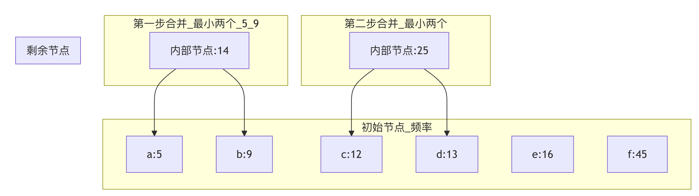

Greedy Algorithm
A greedy algorithm (known in English as greedy algorithm), also called the greedy method, is an algorithmic strategy that, at each step, takes the best or optimal (i.e., most favorable) choice in the current state, hoping to lead to a globally best or optimal result.
Greedy AlgorithmAs we often say, it only cares about immediate benefits and does not consider the overall optimum; the choice made is only a locally optimal solution in some sense.
Imagine you have a pile of coins of different denominations (for example, 1 yuan, 5 jiao, 1 jiao), and you need to make 1.8 yuan using the fewest coins.
A very natural idea is:Always first take the coin with the largest denomination,。
First take a 1-yuan coin, leaving 0.8 yuan; then take a 5-jiao coin, leaving 0.3 yuan; finally take three 1-jiao coins.
Throughout the whole process, at every step we madeThe choice that currently looks bestThis is the core idea of the greedy algorithm.
Greedy AlgorithmIt is like a short-sighted but decisive person:
- Choice at each stepAt the current state, make the choice that looks optimal.
- Does not consider the global picture: without considering the impact of this choice on the future
- Expected resultHope that the local optimal choice can lead to a global optimal solution.
Real-world cases:
- Making change: always use the largest denomination coin first
- Hill climbing: always move in the steepest direction
- Shopping: always buy the currently most favorable product
- Route selection: always choose the currently shortest path
Characteristics of the greedy algorithm
- Greedy choice propertyThe optimal solution at each step can be derived from the local optimal solutions of the previous steps. Later choices will not affect earlier choices.
- Optimal substructureThe optimal solution to a problem contains the optimal solutions to its subproblems. This is also a property of dynamic programming, but a greedy algorithm greedily chooses the optimal solution to a subproblem at every step.
| Features | Description | Advantages | Disadvantages |
|---|---|---|---|
| Local optimum | Choose the current optimal solution at each step | Simple and intuitive | May not be globally optimal |
| Irreversible | Cannot regret after choosing | Fast decision-making | Prone to getting stuck in local optima |
| Efficiency | Usually has low time complexity | Highly practical | Limited applicability |
| Simple implementation | Logic is clear and easy to understand | Easy to code | Need to prove correctness |
Differences from dynamic programming
This is a point that beginners often find confusing. Let us compare them with a table:
| Features | Greedy Algorithm | Dynamic programming |
|---|---|---|
| Decision basis | Make the current optimal choice at each step,No backtracking。 | Each step's choice depends on the solution of subproblems, saves intermediate results, and can compare multiple choices. |
| Optimal solution guarantee | It may not yield the global optimal solution; the problem itself needs to have the greedy-choice property. | Usually can obtain the globally optimal solution. |
| Efficiency | Efficient, usually with lower time complexity. | Relatively low, because overlapping subproblems need to be solved. |
| Applicable scenarios | The problem has the greedy-choice property and optimal substructure, such as Huffman coding and minimum spanning trees. | The problem has optimal substructure and overlapping subproblems, such as the knapsack problem and shortest paths. |
Simply put,Dynamic programming is "think before you act" and sacrifices immediate interests for long-term benefits; greedy algorithms are "eat, drink, and be merry today" and only pursue immediate benefits.
Basic framework of the greedy algorithm
Greedy algorithms have no fixed code template, but their idea can be summarized into the following steps:
- Build a mathematical model: abstract the real-world problem into a mathematical problem.
- Define a greedy strategyDetermine the criterion for choosing the "optimal solution" at each step. This is the core and difficulty of the algorithm.
- Prove the greedy strategyProve that the defined greedy strategy can lead to a global optimal solution (optional but important; for algorithm problems, you usually need to understand its correctness).
- Iterative solvingAccording to the strategy, starting from the initial state, make greedy choices step by step until a solution to the problem is obtained.
A general pseudocode framework is as follows:
Example
# 1. Initialization: may include sorting, creating a result container, etc.
solution = []
# 2. Iterate over all options; usually you need to sort by some rule first
for item in sorted(problem.items, key=Greedy strategy rule):
# 3. Greedy choice: if the current choice satisfies the condition, adopt it
if is_feasible(solution, item):
solution.append(item)
# 4. Return the final constructed solution
return solution
Classic problems and code examples
Let us experience the application of greedy algorithms through a few classic problems. For each problem we will: 1) analyze the problem and greedy strategy; 2) provide complete code; 3) provide a line-by-line explanation.
Example 1: Coin Change problem
Problem description: Suppose the coin system is [100, 50, 20, 10, 5, 1] (unit: cents), and we need to make changeamountcents, find the minimum number of coins needed.
Greedy strategy：Each time choose the largest coin whose denomination does not exceed the remaining amount.For the RMB currency system, this strategy is effective.
Code implementation：
Example
"""
Use the greedy algorithm to solve the coin change problem (for a specific coin system)
:param coins: list[int], list of coin denominations, should be sorted in descending order
:param amount: int, total amount to make change for
:return: list[int], list of coin denominations used
"""
coins.sort(reverse=True) # Ensure coins are sorted by denomination from highest to lowest
result = [] # Used to store the coins for making change
remaining = amount # Remaining amount for which change is needed
for coin in coins:
# When the current coin denomination is less than or equal to the remaining amount, use it as much as possible
while remaining >= coin:
result.append(coin)
remaining -= coin # Deduct the current coin denomination from the remaining amount
# Check whether the change is made exactly
if remaining == 0:
return result
else:
# For cases where exact change cannot be made (although this will not happen in this coin system)
return None
# Test data
test_coins = [100, 50, 20, 10, 5, 1]
test_amount = 186 # 1 yuan 8 jiao 6 fen
change = coin_change_greedy(test_coins, test_amount)
print(f"Change for {test_amount} fen, coins needed: {change}")
print(f"Number of coins: {len(change)}")
# Output: change for 186 fen, coins needed: [100, 50, 20, 10, 5, 1]
# Number of coins: 6
Code explanation：
- Line 8:
coins.sort(reverse=True)This is the key preparation for the greedy strategy, ensuring that we always consider larger denominations first. - Lines 12-15:
whileThe loop ensures that as long as the current denomination can still be used, we keep using it; this implements the greedy choice of "as many as possible." - Lines 18-22: Check the final result to ensure the amount matches exactly.
Important note: Greedy algorithm for solving the change-making problemDoes not always produce the optimal solutionFor example, if the coin system is [25, 20, 10, 5, 1] and you need to make 40 cents, the greedy method would choose 25+10+5 (three coins), but the optimal solution is 20+20 (two coins).Only under specific currency systems (such as RMB) is the greedy strategy effective.
Example 2: Interval Scheduling problem
Problem descriptionGiven many meetings (each with a start time and an end time), how should you arrange them to maximize the number of meetings you can hold in one meeting room?
Greedy strategy：Each time choose the meeting with the earliest end timeThis leaves more time for later meetings.
Code implementation：
Example
"""
Solving the maximum non-overlapping intervals problem (interval scheduling)
:param intervals: list of [start, end], interval list
:return: list of [start, end], selected interval list
"""
# 1. Sort by end time in ascending order
intervals_sorted = sorted(intervals, key=lambda x: x[1])
selected = [] # Store the selected intervals
last_end_time = -float('inf') # Initialize the end time of the previous selected interval
for interval in intervals_sorted:
start, end = interval
# 2. Greedy selection: If the start time of the current interval is not earlier than the end time of the previous selected interval, select it
if start >= last_end_time:
selected.append(interval)
last_end_time = end # Update the last end time
return selected
# Test data: each sublist represents a meeting [start time, end time]
test_intervals = [
[1, 3], [2, 4], [3, 5], [4, 6], [5, 7],
[1, 2], [2, 3], [1, 4]
]
result = interval_scheduling(test_intervals)
print(Maximum number of meetings that can be scheduled (after sorting by end time):)
for meeting in result:
print(fMeeting [{meeting[0]}, {meeting[1]}])
print(fTotal {len(result)} meetings)
# One possible output (because the order after sorting may differ, but the count is optimal):
# Meeting [1, 2]
# Meeting [2, 3]
# Meeting [3, 5] or [4, 6], etc.
# Total 4 meetings
Code explanation：
- Line 10:
sorted(intervals, key=lambda x: x[1])This is the core of implementing the greedy strategy: sort by end time. - Lines 16-19:
if start >= last_end_timeThis is a feasibility check, ensuring that the current meeting does not overlap with the selected meetings. - The time complexity of this algorithm is O(n log n), mainly from the sorting.
Example 3: Huffman Coding - Concept and Simplified Implementation
Huffman coding is a greedy algorithm for lossless data compression. Its core idea is:Assign shorter codes to characters with higher frequencies and longer codes to characters with lower frequencies.。
Greedy strategyRepeatedly merge the two nodes with the smallest frequencies to build a binary tree.
Since a full implementation is quite long, here we show its core greedy merging process:
Example
class Node:
"""Huffman tree node class"""
def __init__(self, char, freq):
self.char = char # Character (leaf nodes only)
self.freq = freq # Frequency
self.left = None
self.right = None
# To allow comparison in the heap, define comparison methods
def __lt__(self, other):
return self.freq < other.freq
def build_huffman_tree(char_freq):
"""
Construct Huffman tree
:param char_freq: dict, characters and their frequencies, e.g. {'a': 5, 'b': 9, 'c': 12, 'd': 13, 'e': 16, 'f': 45}
:return: Node, the root node of the Huffman tree
"""
# 1. Initialization: create a leaf node for each character and put it into a min-heap (priority queue)
heap = [Node(char, freq) for char, freq in char_freq.items()]
heapq.heapify(heap) # Convert the list into a min-heap
# 2. Greedy merge: when there is more than one node in the heap
while len(heap) > 1:
# Pop the two nodes with the smallest frequencies
left = heapq.heappop(heap)
right = heapq.heappop(heap)
# Create a new internal node whose frequency is the sum of the children's frequencies
merged = Node(None, left.freq + right.freq)
merged.left = left
merged.right = right
# Push the new node back into the heap
heapq.heappush(heap, merged)
# The last remaining node in the heap is the root of the Huffman tree
return heap[0] if heap else None
# Test data
test_freq = {'a': 5, 'b': 9, 'c': 12, 'd': 13, 'e': 16, 'f': 45}
root = build_huffman_tree(test_freq)
print("Huffman tree construction complete! Root frequency =", root.freq if root else 0)
# Output: Huffman tree construction complete! Root frequency = 100
Algorithm VisualizationThe following figure shows the first few merge steps of building the Huffman tree using the above test data:

Illustrated explanationThe algorithm always selects the two nodes with the smallest frequencies from all available nodes (initially leaf nodes, and later including internal nodes) and merges them into a new internal node. This process is repeated until a complete binary tree is formed. The leaf nodes of this tree correspond to the original characters, and the path from the root to a leaf (left branch is 0, right branch is 1) is the Huffman code for that character.
Correctness proof of the greedy algorithm
How do you determine whether a problem can be solved with a greedy algorithm? Usually you need to prove the following two points:
- Greedy choice propertyIt can be proved by mathematical induction or proof by contradiction that the optimal choice at the first step is contained in some global optimal solution.
- Optimal substructureProve that after making the first greedy choice, the original problem is reduced to a smaller-scale one.Same-type subproblems。
withInterval scheduling problemProof idea using ... as an example:
- Greedy choiceLet the interval with the earliest end time among all intervals be
i. There exists an optimal solution containing interval ...i。- Proof: Suppose some optimal solution does not contain it.
i. Let the first interval in that optimal solution be ...j. Becauseiends earliest, so replace ... with ...ireplacejit does not conflict with other intervals, and the size of the solution remains unchanged, so it containsiThe resulting solution is also optimal.
- Proof: Suppose some optimal solution does not contain it.
- Optimal substructure: When selecting intervals
iAfterwards, the remaining problem is, among all intervals that ... with ...ifind the optimal solution among non-overlapping intervals. This constitutes a subproblem of the original problem.
Practice exercises
Now, try to solve the following problems using the greedy algorithm to reinforce your understanding.
Exercise 1: Jump Game
Problem: Given a non-negative integer arraynumsYou are initially at the first index of the array. Each element in the array represents the maximum length you can jump from that position. Determine whether you can reach the last index.Example：nums = [2,3,1,1,4], returnTrue(Jump 1 step from index 0 to index 1, then jump 3 steps to the last index).Greedy strategy hintInstead of simulating how far to jump at each step, maintain aFarthest reachable position。
Exercise 2: Assign Cookies
ProblemThere are a group of children and a pile of cookies; each child has an appetite valueg[i], each cookie has a sizes[j]A child is satisfied only if the cookie size >= the child's appetite. Find the maximum number of children that can be satisfied.Example：g = [1,2,3], s = [1,1], output1。
Greedy strategy hint: To satisfy more children,Use the smallest cookie to satisfy the child with the smallest appetite.(or think about it the other way around).
Exercise 3: Best Time to Buy and Sell Stock II
Problem: Given an arrayprices, whereprices[i]is the ... of a given stock on the ...iThe price for each day. You may complete as many transactions as you like (i.e., buy and sell one stock), but you cannot participate in multiple transactions at the same time (you must sell the previous stock before buying again). Calculate the maximum profit you can obtain.Example：prices = [7,1,5,3,6,4], output7(Buy at 1 and sell at 5, profit 4; buy at 3 and sell at 6, profit 3; total profit 7).Greedy strategy hintProfit can be decomposed into daily price differences. As long astoday's price is higher than yesterday's, take this difference as profit.。
Click me to share notes
The note must be an extension of this article's content!
For article submission, click here
How to obtain the registration invitation code
Before sharing notes, you mustLog in！
How to obtain the registration invitation code